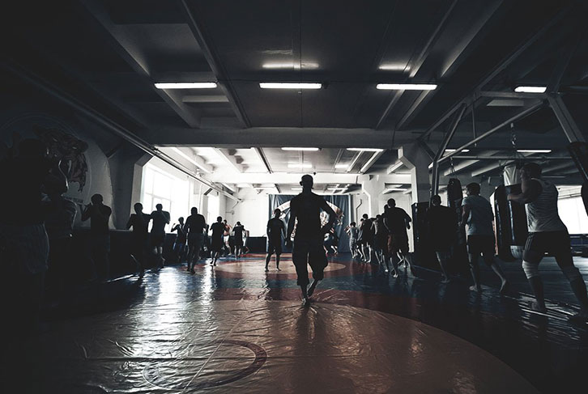

Чего тебе не хватает,
чтобы быть образцом
для подражания?
Почему у некоторых мужчин крепкие семьи, успешные
друзья, они хорошо зарабатывают и всегда находятся
в центре внимания? Иногда кажется, что эти люди уже
родились такими, а ты будто сделан из какого-то
другого теста.
Мы создали Спарту для того,
чтобы каждый мужчина мог:
Реализовать себя в
профессиональной
и личной жизни
Стать примером для своих
близких на физическом,
интеллектуальном и
духовном уровне
Расширить свой круг
общения
Быть независимым
от чужого мнения
и уверенным в себе
Быть надежным
и честным человеком
Спарта не учит считать деньги, делать бизнес или
общаться с людьми. Мы лишь показываем тебе, какими
возможностями и ресурсами ты обладаешь. Спарта не
изменит твою жизнь за три дня — ты сделаешь это сам.
В основе курса лежит сочетание
физической, психологической
тренировки и духовного развития
Наш курс основан на методиках физической и психологической подготовки спортсменов,
тренировках специалистов по выживанию, духовных основах восточных единоборств
и базовых моральных ценностях.
Физические занятия
Физическая нагрузка — безотказный способ
воздействовать на твою личность. Ты увидишь
свои скрытые ресурсы и поймешь, что у тебя есть
всё, чтобы двигаться к цели.
Духовный рост
Двигаясь к цели, важно сохранить любовь
в своем сердце и умение сострадать людям.
Участие в благотворительных акциях покажет,
что ты можешь сделать для тех, кто нуждается
в помощи.
Психологические упражнения
От того, что творится у тебя внутри, зависит
окружающий тебя мир. Спарта поможет тебе
разобраться с собой и изменить свою жизнь.
Превзойди себя и начни
действовать!
Выполнив задание, ты:
Подготовишься
к основному курсу «Спарта.
Первый шаг»
Научишься быть более
дисциплинированным
Получишь стимул для
постоянного развития
Как проходит курс
«Спарта. Первый шаг»?
Трехдневный курс «Спарта. Первый шаг» — это только начало пути. После его окончания
будет еще 21 день дополнительной программы, цель которой — закрепить результаты
курса и выработать у участников привычку каждый день становиться лучше.
Основной курс проходит на протяжении 3-х дней, с пятницы по воскресенье.
В большом зале мы собираем группу из 30-200 мужчин и занимаемся не менее 7 часов
в день с перерывами на отдых. С группой работает тренер и опытные кураторы.
Что ты получишь за эти 3 дня?
День 1
Знакомство со своими слабостями и их преодоление.
Новое окружение, которому тоже важно становиться лучше и достигать своих целей
Убедишься в том, как легко мы уговариваем себя отступить, когда нам трудно. Цель всех дальнейших упражнений — не поддаваться на эти уговоры.
Увидишь, сколько времени у тебя реально осталось на осуществление своей мечты.
Узнаешь на практике, как вклад каждого участника влияет на достижения всей команды.
Удивишься скрытым ресурсам твоего тела, когда не жалеешь себя, а заботишься о соратниках.
Поборешь страх каждого мужчины — страх драки. Тренер подберет пары и проведет короткие контролируемые спарринги.
Определишь, каким должен быть настоящий мужчина, чтобы им гордились и брали с него пример.
Увидишь, как полученные за два дня знания сливаются в одну картинку твоей будущей жизни.
Очистишься от накопившегося внутри негатива: старых обид, ненависти, чувства вины. Так ты освободишься от всего, что тянет тебя назад.
Поставишь перед собой новые цели, которые важны именно для тебя. Методика Спарты поможет избавиться от навязанных желаний и понять, чего ты хочешь на самом деле.

21 день самостоятельной
работы под надзором опытных
кураторов
После окончания трехдневного курса «Спарта. Первый шаг» ты получишь доступ
к скрытому разделу сайта, где выложена программа на следующие 3 недели
занятий. Методичная работа над собой в течение 21 дня — проверенный тысячами
наших выпускников способ добиться реальных изменений в своей жизни.
Тренеры Спарты — воплощение ценностей настоящих
мужчин. Они добились результата и готовы поделиться
с тобой тем, чему научились сами
Антон Бритва
Главный тренер и основатель проекта Спарта.
Провел более 140 обучающих программ.
Автор и разработчик уникальных обучающих
адаптационных программ в области экстремальных
ситуаций. Спортсмен-единоборец со стажем занятий
более 10 лет, неоднократный победитель и призер
турниров по самбо. Покорил Эльбрус,
Олимп и Килиманджаро, увлекается яхтингом.
Хочешь ощутить максимальный
эффект от курса?
Получи 5-страничную
инструкцию от
Антона Бритвы
и начни готовиться
уже сегодня!
Спарта научит тебя быть
лидером и вдохновлять
других
Старая армейская мудрость гласит: марш-бросок
не завершится, пока не добежит последний, самый медленный
солдат. Если ты умеешь бегать быстрее всех — это не главное.
Без команды невозможно добиться сверх-результата, и каждый
её член несёт ответственность за общие достижения.
Спарта продемонстрирует, как важно развивать не только себя,
но и свою семью, партнеров по бизнесу и сотрудников.
Невероятная атмосфера
поддержки: Спарта помогла
Семену Радаеву подняться
на Эльбрус, невзирая на
инвалидное кресло
Семен Радаев из г. Саранска оказался
в инвалидном кресле после автомобильной
аварии. В 2014 году он прошел курс
«Спарта. Первый шаг» и решил подняться
на Эльбрус. Это стало возможным только
благодаря поддержке всей команды.
Группа из 17-ти «спартанцев», с которой
поднимался Радаев, получила название
«штурмовой». Перед командой стояла задача —
подняться самим и помочь пройти путь
к вершине Семену.
Газета
У Сэма была очень важная роль, хотя, возможно,
он сам её не осознаёт. Он вдохновлял и
мотивировал штурмовую группу и ещё шесть
десятков человек, которые поднимались
медленнее. Когда ты знаешь, что человек
двигается дальше в таких условиях, у тебя нет
внутреннего позволения сдаваться
Антон Бритва
Невероятная история Семёна моментально привлекла
внимание федеральных СМИ. Вот лишь некоторые
сюжеты о том, как мы вместе поднимались на Эльбрус
Вести Москва
АиФ.ru
Ты тоже способен на многое, что сейчас кажется тебе
невозможным! Запишись на курс «Спарта. Первый шаг»,
и мы научим тебя показывать сверх-результат.
Узнай, как Спарта научит тебя
действовать по-крупному
Как никогда не
сомневаться в своих
силах и браться за
масштабные задачи?
Руслан Гафаров,продюсер проекта Спарта
Результаты участников курса
«Спарта. Первый шаг»
«Жена увидела, как я стал вкладываться
в развитие детей»
Алексей Осинцев
Екатеринбург
Сначала мой партнер по бизнесу прошел Спарту и
четыре месяца просто поражал меня теми результатами,
которые он получил. Я приглядывался, прислушивался и в
результате через несколько месяцев осознанно оказался
в Спарте.
Передо мной стояла очень серьезная задача: в
предкризисном состоянии открыть глобальный
гипермаркет недвижимости в городе Екатеринбурге.
Это была мечта, к которой мы шли три года
и при этом немножко побаивались, поскольку все экономические показатели говорили: этого делать не стоит. Именно на Спарте я принял решение, что я это сделаю. Я возьму буквально два-три месяца и за это время вместе со своим партнером открою гипермаркет недвижимости.
Я очень доволен результатом. Я поверил в то, что хватит финансов, хватит сил, хватит энергии тех людей, которых мы вовлекли в этот проект. И самое удивительно, что очень многие ребята из Спарты — из прошлых периодов и те, кто проходил вместе со мной — так или иначе оказались участниками реализации этого проекта. Они либо поддерживали, либо были подрядчиками.
Я проходил очень много тренингов, в том числе тренингов личностного роста. Но ни один из них не был связан с физикой. Я для себя четко понял, что там, где есть физика, там есть духовный рост.
Жена очень довольна, потому что она стала чаще видеть меня дома. И самое главное, что она увидела, как я стал вкладываться в развитие детей. Я думаю, что любая жещина этому порадуется, а дети будут просто в восторге от того, что папа становится для них другом, соучастником любых игр, амбициозных путешествий. Поэтому спасибо Спарте.
«За год после Спарты я похудел на 29 кг
и полностью отказался от спиртного»
Сергей Нифонтов
Москва
Я прошел свою Спарту год назад, в феврале 2014 года. Там я увидел себя, все свои сильные стороны и слабости.
Перед курсом я поставил себе цель к Новому: году весить 80 кг или меньше. Но пока не пришел на Спарту, я ничего для этой цели не делал.
и только мотивация, которую я получил на Спарте, дала силы перешагнуть порог спортивного клуба. В итоге за год я похудел на 29 кг. Теперь я каждый день делаю зарядку или тренируюсь, по утрам обливаюсь холодной водой. После 20 лет пивного алкоголизма полностью отказался от спиртного.
Спарта научила меня терпеть. Раньше было так: если больно или страшно, то я бросал делать. Теперь если тяжело или больно, то я терплю и продолжаю делать. Если страшно, я боюсь и делаю.
Я работаю бизнес-тренером и стал применять полученные навыки в своих занятиях. Многие слушатели заряжаются моей спортивной энергетикой и начинают заниматься спортом. Соя семья — жена и двое детей — с удовольствием ездят со мной в горы на трекинги, катаются на вэйкборде, занимаются бегом по утрам. Так что Спарта действует не только на меня, а и на все мое окружение.
Нужно ли идти на Спарту? Если у вас вопросов больше чем ответов, если в жизни трудности и неопределенность, если нужен прорыв — идите. Будет тяжело, страшно, больно. Но это того стоит.
«Увеличил ежемесячный доход в несколько раз
и решил финансовые проблемы сестрёнки»
Иван Гусев
Иркутск
После Спарты стал соблюдать режим дня, каждый день делать зарядку и принимать контрастный душ утром и вечером. Больше стал уделять времени активному отдыху — велосипед, походы, прыжок с парашютом, пробежки. Полностью отказался от алкоголя и перестал чувствовать усталость по утрам после очередных посиделок с друзьями за пивом.
Решил свои финансовые вопросы и вопросы сестренки. До этого не хватало смелости просто отказать некоторым людям, поставить точки в делах и потребовать свое.
Пересмотрел то, чем занимаюсь (было порядка пяти разных направлений). Завершил ненужные проекты и прервал отношения с людьми, которые тянули вниз, можно сказать, сидели на шее. Тем самым высвободил кучу времени и энергии. При этом больше времени стал уделять тем людям, которые тянуться вверх и нуждаются в моей поддержке: встречаюсь с ними, советую нужную литературу и курсы, делюсь опытом.
Благодаря этому люди растут, а это ведь мое окружение!
В квартире и на даче устранил все мелкие недоделки.
Почти каждый день начал читать. До этого все “времени не хватало”.
По-другому посмотрел на отношения с девушкой, и как результат — скоро свадьба.
«Я сделал то, что давно откладывал на потом:
занялся боксом и серфингом»
Антон Кузнецов
Санкт-Петербург
Спарта изменила в моей жизни очень многое. У меня появилось столько дел и занятий, что я стал заранее планировать свой день и наконец организовал четкий режим, которого придерживаюсь. В первую очередь я сделал все то, что давно откладывал на потом: доделал все мелкие дела и «хвосты», занялся боксом, съездил в отпуск на Шри-Ланку, начал заниматься серфингом.
Теперь каждый день стараюсь пробовать что-то новое.
На работе структурировал все процессы, нашел слабые места, стал четко планировать результат. За первые два месяца увеличил свой доход на 50%. Разрабатываю несколько идей собственного бизнеса и в ближайшее время начну их осуществлять.
В личной жизни наладил отношения с людьми, с которыми были давние обиды и недопонимания. И вообще полностью исключил из своей жизни конфликты — контролирую себя и веду самоанализ.
Научился отключаться вечером от насущных проблем и освобождать разум и сознание для новых мыслей. Как ни странно, проблемы от этого стали решаться быстрее и эффективнее, потому что появилось время для отдыха и “перезарядки”.
«Проект Спарта подарил мне родителей»
Максим Барабанов
Сосновоборск, Красноярский край
Первое что я сделал, вернувшись со Спарты — это позвонил родителям и пригласил их в гости. Я сделал это впервые, потому как раньше не особо желал их видеть и слышать. Когда звонила мама, я часто не брал трубку, сбрасывал или отвечал голосом уставшего утомлённого, лишь бы только побыстрей закончить разговор.
Те, кто видел ролики про Спарту, могут не понять, как это взаимосвязано; вроде спортивное мероприятие — и вдруг взаимоотношения с родителями. Но те, кто прошёл, не задают вопросов. Потому как понимают, что не заметить звонка от мамы может каждый, а взять трубку и сказать: «Мама, я тебя люблю» — это удел сильного мужчины!
Мой отец сильно бухал, дошло до «Тройного одеколона», никто не мог ничего сделать в течении многих лет, он сменил 5-6 мест работы в этом году. После Спарты мой откровенный разговор с отцом сподвиг его на кодировку. Во время кодировки мы узнали, что у него тромб в сосудах головного мозга, и приди мы на 2 недели позже, инсульт был бы неминуем.
Проект Спарта подарил мне родителей. Антон, я не знаю, как тебя благодарить...
Стань одним из выпускников Спарты и измени
себя к лучшему навсегда
Спарта регулярно проводит
благотворительные акции
В рамках каждого курса «Спарта. Первый шаг» мы инициируем сбор
средств для детских домов, школ-интернатов и других организаций,
которым нужна помощь. Все участники курса становятся волонтерами.
Вот несколько примеров того, что мы осуществили вместе:
В ноябре 2013 года мы собрали 140 000 рублей на
благотворительную акцию и устроили праздник для
2-х детских домов в Екатеринбурге.
В 2014 году «спартанцы» из Санкт-Петербурга собрали
на уличных концертах 250 000 рублей за четыре
выходных. На эти деньги были куплены путевки
на море для 20 детей из Выборгского
детского дома «Родничок».
В октябре 2013 года в Санкт-Петербурге прошёл турнир
по футболу между командами мальчишек из детских
домов под эгидой местного отделения Спарты.
Зимой 2014 года «спартанцы» в Уфе собрали более
200 000 рублей и приобрели спортивный инвентарь для
школы-интерната №3. Акция была направлена на
развитие здорового поколения молодежи.
На этих видео запечатлена лишь малая часть добрых дел, которые «спартанцы» сделали
за несколько лет. Каждую неделю проходит по 2-3 акции.
7
стран
82
города
Спарта — это активное
сообщество, в котором
свыше 100 000 человек
по всему миру
Помимо курса «Спарта. Первый шаг» в сообществе происходит
множество спортивных и интеллектуальных мероприятий, встреч
с интересными людьми.
Посмотри видео и узнай о наших
проектах меньше чем за 3 минуты
Учись у лучших
Спортсмены, бизнесмены, врачи,
общественные деятели и бизнес-тренеры проводят
встречи и мастер-классы для участников Спарты,
чтобы поделиться секретами успеха и дать полезные
рекомендации в своей области.
Итак, конкурс «Герой МН» подошел к своему триумфальному завершению. Мы отсеяли тех, кто был уличен в подтасовках; потом отсекли тех, у кого было меньше 10 000 голосов и, наконец, провели голосование по оставшимся участникам. Вот в таких, прямо скажем, нечеловеческих муках родилась эта великолепная пятерка. Знакомься – Антон Руданов, Антон Шешунов, Николай Мисюра, Максим Биленко, Дмитрий Сиренко.
Если вы не просыпаетесь каждое утро с мыслью о тех целях, которые себе поставили и запланировали, то, скорее всего, эти цели не представляют для вас такой важности. Поэтому возьмите в свои руки ответственность и поставьте те цели, которые как можно чаще будут приходить вам в голову. Второе, что нужно понять человеку, который задумался о достижении собственных целей, что никто из нас не проживет вечно.
Главное понять, что мы никого и не меняем — люди делают это сами. Спарта лишь создает условия. У меня часто спрашивают: как можно изменить человека за три дня\неделю? Изменить человека не может никто: если он не сдается, его ничто не поменяет. Мы же создаем такие условия, в которых не выживут лень, слабость и равнодушие.
Основатель и главный тренер Спарты Антон Бритва уверен, что у большинства современных мужчин нет ответственности и умения принимать решения: «В нашей культуре нет акцента, что мальчик должен быть мужчиной, но есть акцент, что он должен быть потребителем и жить от iPhone3 до iPhone4».
Вместе со мной Спарту проходили абсолютные разные по сути, возрасту (18-47 лет), социальному статусу, региону проживания и уровню физической подготовки мужчины. Но всех объединяло желание измениться, поработать над собой и стать лучше. Малознакомые парни, которых я видел в самом начале в коридоре, теперь — одна команда, в любой момент готовая помочь и поддержать»
Современный мужчина порой слишком мягкий. И причин тому несколько. Во-первых, большое количество разводов, как следствие — мальчиков, сыновей, воспитывают женщины. Во-вторых, люди не чувствуют потребности в развитии: не занимаются спортом, не задумываются, что же в их характере и образе жизни не так. Спарта заставляет пересмотреть своё отношение к себе, семье, карьере.
Испытываешь большую радость: мы это сделали. До восхождения я общался с людьми, которые раньше пытались поднимать колясочников на Эльбрус. Они совершенно не верили в нашу затею, даже смеялись: «Ну, давайте, попробуйте, удачи». И сейчас, когда я буду передавать им лыжи, с такой гордостью сообщу, что мы смогли!
Что мешает тебе начать
работать над собой прямо
сейчас?
Живое участие в трехдневном
курсе 14 июля -16 июля и 3-х недельной
дополнительной программе
24 880 руб.
Цена может измениться в любой момент!
Для инвалидов I и II группы участие бесплатное.
Гарантия
результата
Мы вернем тебе деньги, если ты
пройдешь Спарту и останешься
недоволен достигнутым.
Иркутск
Живое участие в трехдневном
курсе 14 июля -16 июля и 3-х
недельной дополнительной
программе
24 880 руб.
Цена может измениться в любой момент!
Для инвалидов I и II группы участие бесплатное.
Гарантия
результата
Мы вернем тебе деньги, если ты
пройдешь Спарту и останешься
недоволен достигнутым.
Мы регулярно организуем
мероприятия, в том числе
бесплатные и открытые для
всех желающих:
Интеллектуальные
Спортивные
Развлекательные
Туристические
Подробная инструкция для
участников из 17 пунктов,
чтобы пройти Спарту
максимально эффективно
Твоя заявка
принята!
Организатор Спарты свяжется
с тобой в течение 12 минут и
расскажет о событиях, к которым
ты можешь присоединиться
Договор-оферта на оказание услуг
по проведению мероприятий
Договор-оферта на оказание услуг
по проведению мероприятий
Общество с ограниченной ответственностью «Малик», в лице директора Гафаровой А. А., действующей на основании Устава (далее – ИСПОЛНИТЕЛЬ) настоящей публичной офертой предлагает любому физическому лицу (далее – ЗАКАЗЧИК) заключить Договор-оферту на оказание услуг по проведению мероприятий (далее – Договор).
В соответствии с пунктом 2 статьи 437 Гражданского Кодекса Российской Федерации (ГК РФ) в случае принятия изложенных ниже условий и оплаты услуг, лицо, производящее акцепт этой оферты, становится ЗАКАЗЧИКОМ (в соответствии с пунктом 3 статьи 438 ГК РФ акцепт оферты равносилен заключению Договора на условиях, изложенных в оферте).
В связи с вышеизложенным, внимательно прочитайте текст данной публичной оферты и, если Вы не согласны с каким-либо пунктом оферты, ИСПОЛНИТЕЛЬ предлагает Вам отказаться от использования услуг или заключить персональный договор на отдельно обсуждаемых условиях.
Полным и безоговорочным акцептом настоящей публичной оферты является осуществление ЗАКАЗЧИКОМ оплаты предложенных ИСПОЛНИТЕЛЕМ Услуг. Оплатой Услуг считается поступление денежных средств на расчетный счет ИСПОЛНИТЕЛЯ.
1. ОБЩИЕ ПОЛОЖЕНИЯ
1.1. Предметом настоящего Договора является предоставление ИСПОЛНИТЕЛЕМ услуг по проведению мероприятий (коучингов, тренингов, интенсивов, семинаров, вебинаров, конференций и т.п.) – далее - Мероприятие для ЗАКАЗЧИКА при наличии свободных мест. Подробное описание каждого Мероприятия ЗАКАЗЧИК может прочитать на сайте ИСПОЛНИТЕЛЯ http://spartarussia.ru в разделе «Мероприятия».
1.2. По настоящему Договору ИСПОЛНИТЕЛЕМ оказываются следующие услуги:
- подготовка программы Мероприятия;
- разработка календарного плана проведения Мероприятия;
- проведение Мероприятия;
- полное организационное сопровождение Мероприятия.
1.3. Условия, срок (дата), продолжительность и место проведения Мероприятия указываются для каждого конкретного Мероприятия на сайте ИСПОЛНИТЕЛЯ http://spartarussia.ru в разделе «Мероприятия».
1.4. ЗАКАЗЧИК принимает участие в Мероприятиях лично (очно), либо путем просмотра онлайн трансляции, на выбор, по собственному усмотрению, с соблюдением условий настоящего Договора.
1.5. Для просмотра на компьютере онлайн - трансляции ЗАКАЗЧИКУ необходимо иметь персональный компьютер, соответствующий нижеуказанным параметрам:
- процессор intel core 2 duo 1,6 Ghz или AMD Athlon II 215 и выше;
- 2 Gb оперативной памяти и больше;
- входящая скорость интернет-соединения 500 кбит/сек или выше;
Браузер:
- Internet Explorer 8 и выше;
- Google Chrome 10.0.648.204 и выше;
- Mozilla Firefox 4.0 и выше;
- Adobe Flash Player версии 11 и выше;
1.6. Заключение ЗАКАЗЧИКОМ настоящего Договора осуществляется путем последовательного совершения действий (акцепт публичной оферты), указанных в п. 1.7 настоящего Договора.
1.7. Для акцепта настоящего Договора ЗАКАЗЧИК совершает последовательно следующие действия:
1.7.1. Осуществляет ознакомление с текстом настоящего Договора;
1.7.2. Знакомится с условиями участия в конкретном Мероприятии на сайте ИСПОЛНИТЕЛЯ;
1.7.3. Оформляет Заявку на Мероприятие на сайте http://spartarussia.ru;
1.7.4. Нажимает кнопку «Согласен с условиями Договора».
1.7.5. Оплачивает участие в Мероприятии.
1.8. Настоящий Договор считается заключенным и вступает в силу для Сторон с даты оплаты услуг ЗАКАЗЧИКОМ. Оплата вносится в размере 100% предоплаты (иной порядок расчетов возможен в исключительных случаях только после дополнительного согласования с ИСПОЛНИТЕЛЕМ). Датой оплаты считается дата списания денежных средств с расчетного счета ЗАКАЗЧИКА, либо дата внесения денежных средств в кассу ИСПОЛНИТЕЛЯ, или дата передачи денежных средств курьеру ИСПОЛНИТЕЛЯ (при наличии возможности предоставления курьера у ИСПОЛНИТЕЛЯ).
2. УСЛОВИЯ УЧАСТИЯ В Мероприятии
2.1. Для участия в конкретном Мероприятии ЗАКАЗЧИК должен оставить Заявку на интернет-странице Мероприятия. Справочную информацию можно получить по телефону 8 (800) 222-03-23.
2.2. Для оформления Заявки ЗАКАЗЧИК предоставляет следующие данные:
- фамилию, имя и отчество;
- электронный адрес;
- контактный телефон для связи.
2.3. ИСПОЛНИТЕЛЬ подтверждает получение Заявки, присваивает номер заказа и выставляет счет на оплату.
2.4. ЗАКАЗЧИК оплачивает услуги по настоящему Договору в размере, установленном ИСПОЛНИТЕЛЕМ порядке. Информация о стоимости Мероприятий может быть получена по телефону 8 (800) 222-03-23.
2.5. Оплата услуг ИСПОЛНИТЕЛЯ осуществляется следующими способами:
- путем внесения наличных денежных средств в кассу ИСПОЛНИТЕЛЯ, либо передачей денежных средств курьеру ИСПОЛНИТЕЛЯ;
- путем оплаты электронными денежными средствами;
- путем оплаты через платежные терминалы либо интернет-банкинг;
- путем оплаты на расчетный счет ИСПОЛНИТЕЛЯ;
- иными способами по предварительному согласованию с ИСПОЛНИТЕЛЕМ.
3. ПРАВА И ОБЯЗАННОСТИ СТОРОН
3.1. ИСПОЛНИТЕЛЬ обязуется:
3.1.1. Предоставить необходимую информацию для оформления Заявки на участие в Мероприятии ЗАКАЗЧИКОМ. Информация размещается на сайте ИСПОЛНИТЕЛЯ по адресу http://spartarussia.ru
3.1.2. Осуществлять консультационную поддержку относительно предоставляемых услуг, порядка и правил оформления Заявки по телефону 8 (800) 222-03-23 или электронной почте (электронный адрес для связи с ИСПОЛНИТЕЛЕМ: team@itcmalik.com с 10.00 до 19.00 по рабочим дням).
3.1.3. Организовать и провести Мероприятие в соответствии с программой и условиями его проведения, опубликованными на сайте http://spartarussia.ru
3.1.4. Предоставить ЗАКАЗЧИКУ возможность принять участие в Мероприятии лично (очно). ЗАКАЗЧИК также может передать право на участие в Мероприятии любому третьему лицу по своему выбору при условии полной оплаты Мероприятия и обязательном письменном уведомлении ИСПОЛНИТЕЛЯ о контактных данных такого лица не позднее, чем за 2 (два) рабочих дня до даты начала Мероприятия.
3.1.5. В случае изменения условий проведения Мероприятия (цены, даты, места проведения и иных изменениях) уведомить ЗАКАЗЧИКА не менее чем за 1 (один) календарный день до начала действия таких изменений.
3.1.6. Вернуть уплаченные денежные средства ЗАКАЗЧИКУ в случае невозможности проведения ИСПОЛНИТЕЛЕМ Мероприятия.
3.1.7. Отказать ЗАКАЗЧИКУ в предоставлении Услуги в случае неоплаты (неполной оплаты) за Услуги в установленные сроки, при несвоевременном предоставлении Заявки на оказание Услуги, при нарушении правил участия в Мероприятии.
3.1.7. Выдать ЗАКАЗЧИКУ, успешно прошедшему итоговую аттестацию документ, свидетельствующий об участии в Мероприятии, в случае, если это предусмотрено программой конкретного Мероприятия.
3.2. ИСПОЛНИТЕЛЬ ИМЕЕТ ПРАВО:
3.2.1. Проводить фото и видеосъемку во время проведения Мероприятия и использовать полученные материалы по своему усмотрению. ИСПОЛНИТЕЛЬ имеет исключительные права на материалы, полученные в результате фото и видеосъемки, использование указанных материалов иными лицами возможно только с письменного разрешения ИСПОЛНИТЕЛЯ.
3.2.2. В одностороннем порядке изменять стоимость своих услуг, даты проведения Мероприятий, а также иные условия проведения Мероприятия, а также условия настоящего Договора без предварительного согласования с ЗАКАЗЧИКОМ.
3.2.3. Разрабатывать программу Мероприятия и определять количество и состав лекторов, выступающих на Мероприятиях.
3.2.4. Лектор имеет право освободить от участия в Мероприятии любого ЗАКАЗЧИКА в случае, если своими действиями такой ЗАКАЗЧИК создает неудобства для других ЗАКАЗЧИКОВ, а также мешает лектору проводить Мероприятие (отдельное занятие, входящее в Мероприятие). В этом случае денежные средства ЗАКАЗЧИКУ не возвращаются.
3.3. ЗАКАЗЧИК ОБЯЗУЕТСЯ:
3.3.1. Самостоятельно и своевременно знакомится с датой, временем, ценой, условиями проведения Мероприятия.
3.3.2. Приобретая услуги ИСПОЛНИТЕЛЯ заполнить необходимые обязательные поля на странице Заявки с указанием выбранной услуги и достоверной информации о себе.
3.3.3. Оплатить выбранное Мероприятие на условиях и по цене, действующих на данное Мероприятие в момент оплаты. Действующие условия и цены, а также информация о специальных предложениях и реквизиты ИСПОЛНИТЕЛЯ размещаются на сайте http://fincult.ru.
3.3.4. В случае передачи права на участие в Мероприятии третьему лицу, не позднее, чем за 2 (два) рабочих дня до начала Мероприятия, уведомлять об этом ИСПОЛНИТЕЛЯ и в письменной форме сообщить все необходимые данные нового участника.
3.3.5. ЗАКАЗЧИК обязуется посещать все занятия, входящие в оплаченное Мероприятие, а также выполнять и представлять ИСПОЛНИТЕЛЮ для проверки домашнее задание до начала следующего занятия в том случае, если программа Мероприятия предполагает необходимость выполнения такого домашнего задания. В случаях, когда это предусмотрено программой, предоставление выполненного домашнего задания является обязательным условием допуска ЗАКАЗЧИКА к участию в следующем занятии, входящим в Мероприятие. В том случае, если ЗАКАЗЧИК принимает участие в Мероприятии в режиме просмотра онлайн трансляции, он присылает ИСПОЛНИТЕЛЮ выполненное домашнее задание по электронной почте не менее чем за сутки до начала занятия. ИСПОЛНИТЕЛЬ проверяет выполнение домашнего задания и не позднее, чем за 5 часов до начала следующего занятия присылает ЗАКАЗЧИКУ уведомление о результатах проверки по электронной почте. Домашнее задание выполняется в соответствии с требованиями и рекомендациями лекторов.
3.3.6. В случае, если ЗАКАЗЧИК не может посетить Мероприятие лично (очно), то ему предоставляется право получить по электронной почте ссылку на онлайн трансляцию Мероприятия. Для этого ЗАКАЗЧИК должен уведомить ИСПОЛНИТЕЛЯ о необходимости получить такую ссылку посредством направления соответствующего уведомления по адресу: team@itcmalik.com не менее чем за 3 (три) рабочих дня до начала первого занятия в рамках приобретенного Мероприятия. Просмотр трансляции Мероприятия возможен только в день проведения занятия (до 23 часов 59 минут текущего дня). Право изменить формат проведения Мероприятия с очного на онлайн трансляцию, предоставляется ЗАКАЗЧИКУ только 1 (один) раз в течение проведения конкретного, приобретенного ЗАКАЗЧИКОМ Мероприятия. Указанное изменение формата производится на все занятия, входящие в Мероприятие и обратному изменению не подлежит. Данное условие распространяется на ЗАКАЗЧИКОВ, полностью (путем 100% предоплаты) оплативших услугу по проведению Мероприятия, в случае неоплаты/неполной оплаты Мероприятия, изменение формата участия не допускается.
Аналогичные условия действуют также если ЗАКАЗЧИК хочет изменить место (город), где изначально планировал посетить Мероприятие.
3.3.7. Уведомить ИСПОЛНИТЕЛЯ об изменении своих контактных (персональных) данных в письменной форме в течение суток с момента таких изменений.
3.3.8. Письменно уведомить ИСПОЛНИТЕЛЯ об отказе от участия в Мероприятии не позднее, чем за 14 (четырнадцать) календарных дней до начала Мероприятия.
В том случае, если ЗАКАЗЧИК уведомляет ИСПОЛНИТЕЛЯ о своем отказе от участия в Мероприятии в срок менее чем 14 (четырнадцать) календарных дней, но не менее чем за 7 (семь) календарных дней до начала Мероприятия, то ИСПОЛНИТЕЛЬ возвращает денежные средства в размере 50% от суммы, уплаченной ЗАКАЗЧИКОМ.
В том случае, если ЗАКАЗЧИК уведомляет ИСПОЛНИТЕЛЯ о своем отказе от участия в Мероприятии в срок менее чем 7 (семь) календарных дней, но не менее чем за 3 (три) рабочих дня до начала Мероприятия, то ИСПОЛНИТЕЛЬ возвращает денежные средства в размере 30% от суммы, уплаченной ЗАКАЗЧИКОМ.
В том случае если ЗАКАЗЧИК не предупредил ИСПОЛНИТЕЛЯ менее чем за 3 (три) рабочих дня до начала Мероприятия о своем отказе принимать участие в Мероприятии, денежные средства ЗАКАЗЧИКУ не возвращаются.
Во всех случаях отказа от участия в Мероприятии ЗАКАЗЧИК предоставляет ИСПОЛНИТЕЛЮ заявление в письменной форме. В случае отсутствия такого заявления денежные средства ИСПОЛНИТЕЛЕМ не возвращаются.
3.3.9. Приходить на Мероприятия точно ко времени, указанному на сайте ИСПОЛНИТЕЛЯ. Опоздавший ЗАКАЗЧИК не допускается до участия в занятии до следующего перерыва (в соответствии с программой Мероприятия). Уплаченные денежные средства при этом не возвращаются. В том случае, если ЗАКАЗЧИК не получил домашнее задание, выполнение которого обязательно для продолжения участия в Мероприятии, он должен связаться с представителями ИСПОЛНИТЕЛЯ через кол-центр для того, чтобы оставить свои данные и получить такое задание по электронной почте.
3.3.10. В случае участия в Мероприятии в режиме просмотра онлайн трансляции, своевременно (не позднее, чем через полтора часа с момента начала Мероприятия) начинать просмотр трансляции по присланной ИСПОЛНИТЕЛЕМ ссылке.
3.4. ЗАКАЗЧИК ИМЕЕТ ПРАВО:
3.4.1. Требовать от ИСПОЛНИТЕЛЯ соблюдение условий настоящего Договора.
3.4.2. Участвовать в занятиях лично (очно) либо передать право на участие иному лицу при условии полной оплаты Мероприятия и своевременного (не позднее, чем за 2 (два) рабочих дня до начала Мероприятия) письменного уведомления об этом ИСПОЛНИТЕЛЯ.
3.4.3. Отказаться от участия в Мероприятии в случае изменения ИСПОЛНИТЕЛЕМ дат проведения Мероприятия в соответствии с п. 3.2.2. Договора. В этом случае ИСПОЛНИТЕЛЬ возвращает ЗАКАЗЧИКУ уплаченные денежные средства, при условии получения от него письменного заявления об отказе от участия в Мероприятии в течение 2 (двух) календарных дней с момента внесения таких изменений.
3.4.4. Осуществить «заморозку» приобретенного (полностью оплаченного) Мероприятия и его перенос на другую дату, проведения идентичного Мероприятия, единожды после приобретения, предупредив об этом ИСПОЛНИТЕЛЯ не позже, чем за 14 (четырнадцать) календарных дней до даты начала изначально приобретенного Мероприятия (даты первого занятия, входящего в состав Мероприятия). Заморозка производится на срок, не превышающий дату ближайшего идентичного оплаченному Мероприятия. В случае отказа ЗАКАЗЧИКА от принятия услуги, не соответствующего условиям настоящего Договора и произведенного после «заморозки» услуги, услуга считается оказанной ЗАКАЗЧИКУ, денежные средства уплаченные ЗАКАЗЧИКОМ возврату не подлежат.
4. ОТВЕТСТВЕННОСТЬ СТОРОН
4.1. В случаях неисполнения или ненадлежащего исполнения своих обязательств по Договору, Стороны несут ответственность в соответствии с законодательством РФ с учетом условий настоящего Договора.
4.2. ИСПОЛНИТЕЛЬ не несет ответственности в случае ненадлежащего оказания услуги, если ненадлежащее исполнение явилось следствием недостоверности, недостаточности или несвоевременности предоставленных ЗАКАЗЧИКОМ сведений, а также вследствие других нарушений условий настоящего Договора со стороны ЗАКАЗЧИКА.
4.3. ИСПОЛНИТЕЛЬ не несет ответственности за несоответствие предоставленной услуги ожиданиям ЗАКАЗЧИКА и/или за его субъективную оценку, такое несоответствие ожиданиям и/ или отрицательная субъективная оценка не являются основаниями для возврата уплаченных денежных средств.
4.4. ИСПОЛНИТЕЛЬ освобождается от ответственности за полное или частичное неисполнение обязательств, предусмотренных настоящим Договором, если это неисполнение явилось следствием обстоятельств непреодолимой силы, возникших после заключения Договора, в результате событий чрезвычайного характера, которые Стороны не могли ни предвидеть, ни предотвратить разумными мерами (форс-мажор).
4.5. ЗАКАЗЧИК обязуется указывать достоверные данные при регистрации, ИСПОЛНИТЕЛЬ имеет право отказать в участии в Мероприятии лицу, не указанному в списках участников. Окончательный список участников формируется ИСПОЛНИТЕЛЕМ за 2 (два) рабочих дня до начала проведения Мероприятия.
4.6. В случае, если ЗАКАЗЧИК, по причинам, не зависящим от ИСПОЛНИТЕЛЯ, не посетил Мероприятие и не уведомил ИСПОЛНИТЕЛЯ о своем желании отказаться от предоставленных услуг в сроки, указанные в п. 3.3.8. настоящего Договора, то услуга считается оказанной надлежащим образом и оплаченные ИСПОЛНИТЕЛЮ денежные средства возврату не подлежат.
5. РАЗРЕШЕНИЕ СПОРОВ
5.1. Все споры и разногласия, возникшие в связи с исполнением настоящего Договора, решаются Сторонами путем переговоров.
5.2. В случае не достижения согласия между Сторонами все споры рассматриваются в судебном порядке, в соответствии с законодательством РФ.
6. ИНТЕЛЛЕКТУАЛЬНАЯ СОБСТВЕНОСТЬ
6.1. Все информационные материалы, предоставляемые ИСПОЛНИТЕЛЕМ ЗАКАЗЧИКУ в процессе проведения Мероприятия, а также фото и видеосъемка, проводимая во время Мероприятия, являются интеллектуальной собственностью ИСПОЛНИТЕЛЯ, все права на которую защищены законодательством Российской Федерации.
6.2. Незаконное использование (воспроизведение, распространение, импортирование, публичный показ и т.д.) указанных материалов, информации, произведений и учебных пособий ИСПОЛНИТЕЛЯ без письменного согласия последнего влечет за собой гражданскую, административную и иную ответственность в соответствии с действующим законодательством Российской Федерации.
7. ПРОЧИЕ УСЛОВИЯ
7.1. Настоящий Договор действует до момента исполнения Сторонами всех обязательств.
7.2. Оформленная ЗАКАЗЧИКОМ Заявка на оплату услуг, которая заполняется на сайте ИСПОЛНИТЕЛЯ, являются неотъемлемой частью настоящего Договора.
7.3. Заключая настоящий Договор, ЗАКАЗЧИК дает согласие на сбор и обработку ИСПОЛНИТЕЛЕМ персональных данных ЗАКАЗЧИКА. Указанная обработка персональных данных включает, в том числе, совершение следующих действий: обработку (включая сбор, систематизацию, накопление, хранение, уточнение (обновление, изменение)), использование и все прочие действия, в соответствии с Федеральным законом РФ от 27.07.2006 № 152-ФЗ. ЗАКАЗЧИК также дает согласие на использование персональной информации о себе, своих взаимоотношениях с ИСПОЛНИТЕЛЕМ, на использование ИСПОЛНИТЕЛЕМ всей предоставленной ЗАКАЗЧИКОМ информации о себе, своем бизнесе и доходах, публикацию материалов о факте получения услуг у ИСПОЛНИТЕЛЯ средствами массовой информации – телевидением, радио, в интернете, печатных изданиях, социальных сетях, а также публикацию указанных материалов на официальном сайте и в социальных ресурсах ИСПОЛНИТЕЛЯ. ИСПОЛНИТЕЛЬ обязуется прекратить хранение и обработку персональных данных ЗАКАЗЧИКА в случае, если ЗАКАЗЧИК уведомил его о такой необходимости. Уведомление может быть предоставлено в письменной форме по электронной почте team@itcmalik.com или по телефону 8 (800) 222-03-23.
7.4. Заключая настоящий Договор, ЗАКАЗЧИК дает согласие на проведение ИСПОЛНИТЕЛЕМ фото- и видео-съемки во время Мероприятия, в том числе самого ЗАКАЗЧИКА, с последующим использованием этих фото- и видео-материалов. В случае несогласия ЗАКАЗЧИКА на предоставление прав на использование его изображения, он уведомляет об этом ИСПОЛНИТЕЛЯ в письменной форме по электронному адресу team@itcmalik.com
7.5. Во всем остальном, что не предусмотрено настоящим Договором, Стороны будут руководствоваться действующим законодательством Российской Федерации.
7.6. ЗАКАЗЧИК подтверждает, что все условия настоящего Договора ему ясны, и он принимает их безусловно и в полном объеме.
8. ИСПОЛНИТЕЛЬ:
ООО «Малик»
ИНН 0275080547
КПП 027501001
Юридический адрес: 450077, г. Уфа, ул. Достоевского, 83
Почтовый адрес: 450006, г.Уфа, ул. Б. Ибрагимова, 21/1, офис 69
Фактический адрес: 450000, г. Уфа, ул. Революционная 98/1 блок А, офис 3.3
Контактные телефоны: 347 266-18-78; 927 300-87-27; 937 365-46-46
e_mail: team@malikspace.com
spartarussia.ru
Банковские реквизиты:
р/с: 40702810706000009492
к/с 30101810300000000601
в Отделении №8598 ОАО «Сбербанк России» г. Уфа
БИК: 048073601